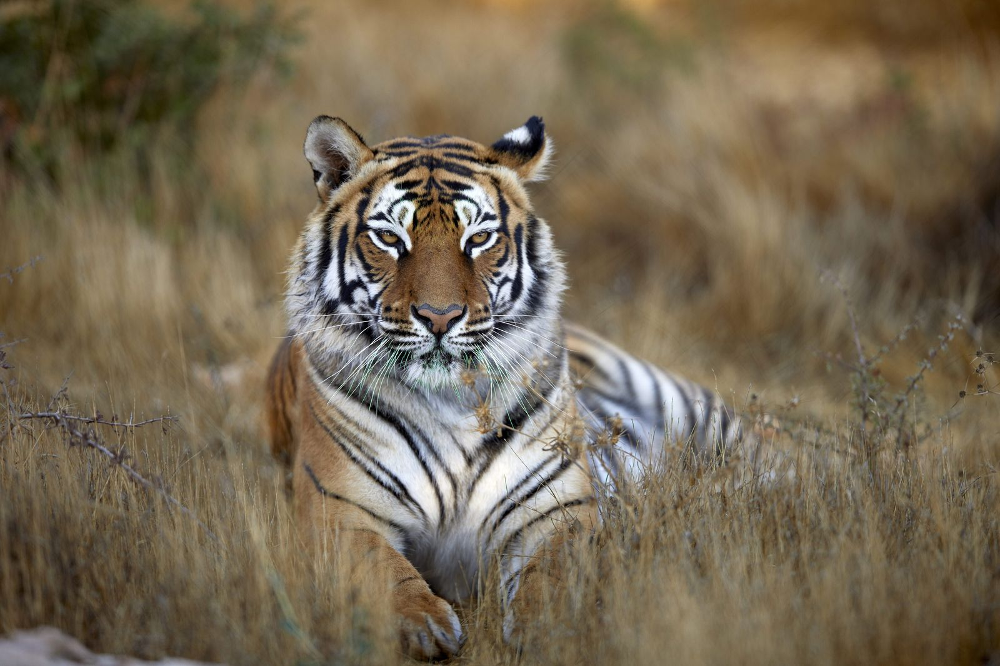
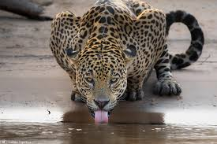

Peso: entre 120 kg e 250 kg.
Comprimento: de 1,4 a 2,5 metros.
Característica: conhecido como "rei da selva", possui uma juba majestosa (nos machos).
Comprimento: de 1,4 a 2,5 metros.
Característica: conhecido como "rei da selva", possui uma juba majestosa (nos machos).
Leão

Peso: até 300 kg.
Comprimento: até 3,3 metros.
Característica: pelagem laranja com listras negras, é o maior dos felinos.
Comprimento: até 3,3 metros.
Característica: pelagem laranja com listras negras, é o maior dos felinos.
Tigre-de-bengala

Peso: até 120 kg.
Comprimento: até 2 metros.
Característica: pelagem dourada com manchas negras, muito forte e ágil.
Comprimento: até 2 metros.
Característica: pelagem dourada com manchas negras, muito forte e ágil.
Onça-pintada